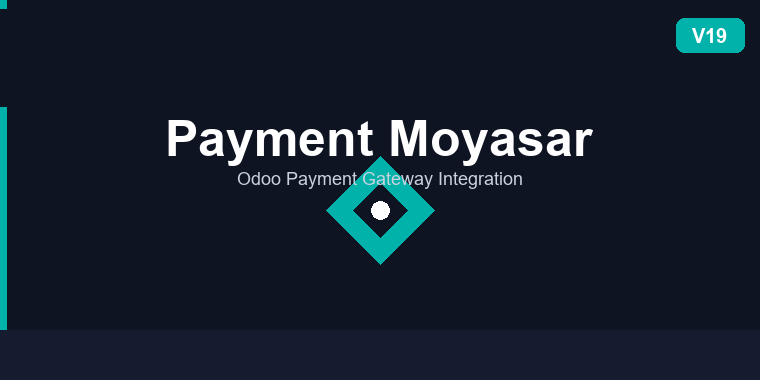

Production / Stable OPL-1 Odoo 19.0 Payment Providers Saudi Arabia
Accept online payments in Odoo through Moyasar — the leading payment gateway in Saudi Arabia and the GCC. This module brings a seamless inline popup payment flow to your e-commerce checkout, sales order portal, invoice portal, and payment links — no page redirects, no broken user experience.
Visa, Mastercard, and Mada cards with 3-D Secure support.
Saudi Telecom Company's widely used mobile wallet — one tap for Saudi users.
Native Apple Pay on Safari and iOS devices — instant biometric checkout.
Payment form opens as a Bootstrap modal — customers never leave the page, improving completion rates.
Fully integrated into the Odoo website checkout flow via website_sale.
Customers can pay their invoices directly from the portal invoice page with a single click.
Sales order portal view supports Moyasar payments alongside standard Odoo providers.
Automatically serves the Apple Pay merchant domain-association file at the required well-known URL — no manual deployment needed.
Moyasar payment IDs are stored on each Odoo transaction for easy reconciliation and support queries.
Successful payments automatically confirm and post draft invoices — accounts receivable stays up to date instantly.
Ships with Moyasar sandbox credentials so you can test the full checkout flow in a staging environment before going live.
/payment-status-return with the payment result and payment ID.Go to Accounting → Configuration → Payment Providers, find Moyasar, and set its state to Enabled.
On the Moyasar provider form, paste your Public Key and Secret Key from the Moyasar Dashboard. Test keys are pre-filled so you can validate the integration before replacing them with live credentials.
apple-developer-merchantid-domain-association file provided by Moyasar./.well-known/apple-developer-merchantid-domain-association.In the provider form, ensure Credit Card is enabled. STC Pay and Apple Pay are activated automatically when available for the customer's device and region.
| Dependency | Type | Purpose |
|---|---|---|
base | Odoo module | Core Odoo framework |
website_sale | Odoo module | E-commerce checkout integration |
sale | Odoo module | Sales order portal payments |
moyasar | Python package | Official Moyasar Python SDK (v0.6.5) |
pip install moyasar==0.6.5
requirements.txt for automated deployment environments.
This module is released under the Odoo Proprietary License v1 (OPL-1).
See the LICENSE file for full terms.
Developed and maintained by MUK IT.
Website: www.mukit.at
Support: support@mukit.at